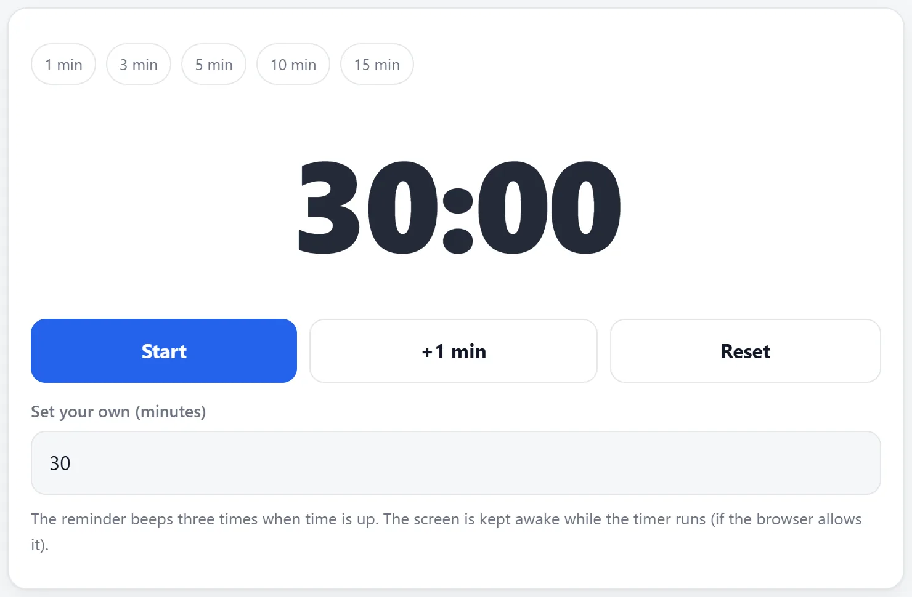

Home › Online countdown timer
An online countdown timer that reads from the back of the room
A phone timer counts down, but its digits are too small for the back row. So the teacher announces the time left again and again, and every announcement cuts into the class's concentration. A timer shown full screen fixes that: every student sees the same time, without asking.
Open the class timer 1–30 minute presets, big digits
Countdown and stopwatch: the difference
| What you need | The right tool | Example use |
|---|---|---|
| A limit you already know | Countdown | A 30 minute test, a 10 minute discussion |
| Measuring how long something takes | Stopwatch | Length of a presentation, clean-up time |
| Marking a change of activity | Short countdown | A 2 minute group transition |
Four common uses
- Tests and quizzes. Thirty minutes, large digits, with an alert in the last five minutes.
- Group work. Ten minutes per session; when time is up, groups rotate or present.
- Student presentations. Three minutes per student; the time left is visible, so you never have to cut anyone off.
- A guided break. Five minutes after a long recess, so the class settles before the lesson.
How to use this timer
- Pick a preset (1, 3, 5, 10, or 15 minutes), or enter your own minutes up to 30.
- Press Start. The digits count down full screen, and the tab title shows the time left.
- Let the screen stay on: the timer uses a wake lock so the display does not go dark mid-lesson.
- When time is up, the alert sounds three times. Press Reset for the next activity.
Try the timer here

Why digit size matters
Students at the back often cannot read small digits, so they ask again and again and disturb the class. With the digits as large as possible, “how many minutes are left?” disappears. The same holds in a hall, where the projector sits further from the audience.
Why 30 minutes is the usual test length
Thirty minutes fits 20–25 multiple-choice questions or two short written answers, and fits inside one class period with the opening and wrap-up. For a longer test, run two 30 minute sessions with a one minute gap; the gap also lets students check their answers to the first part.
If there is no projector
The timer still works on a laptop on the teacher's desk, or on a classroom TV. What matters is that it faces the students, not the teacher. With only a phone, stand it at the front in full screen — the digits still read as far back as the third or fourth row.
Frequently asked questions
What is the longest this timer can run?
Thirty minutes through the minute field, plus quick presets for 1, 3, 5, 10, and 15 minutes. For longer activities, run two sessions.
Does the timer keep running when the screen goes dark?
The timer requests a wake lock while it runs, so the count is not interrupted on the teacher's desk.
Is there a sound when time runs out?
Yes. The alert sounds three times. Volume follows the device settings.
Can it be used without internet?
Yes, once the page has been opened once. The timer files are stored by the browser, so it runs when the school signal is weak.